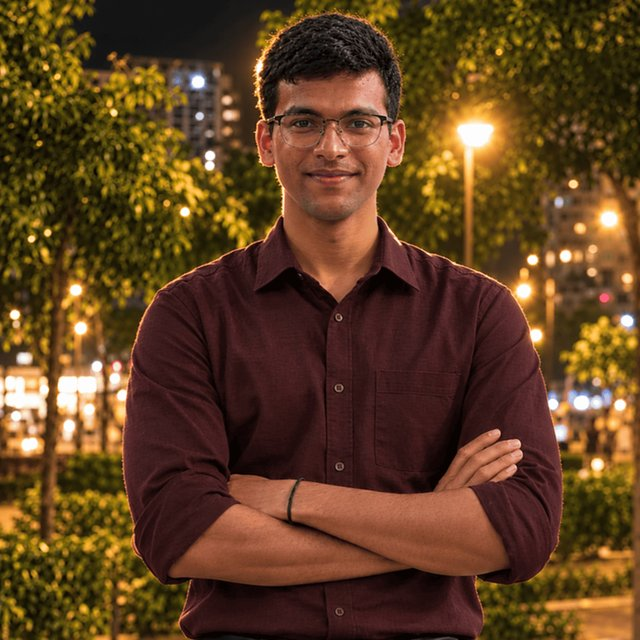

Open to internships & security roles
I'm Rithish — I break things
on purpose, then build them stronger.
Cybersecurity undergraduate at Anurag University in Hyderabad. I spend my time building AI agents, attacking the ones other people built, and shipping the Python services and full-stack apps that hold it all together.

About me
Security first, then everything else
I'm a B.Tech CSE (Cybersecurity) undergraduate at Anurag University who got into security the way most people do — by wondering what happens if you feed a system something it didn't expect.
Most of my work sits where AI agents meet security. I've built voice companions, done reliability and crash testing on agent workflows, and looked for the holes that show up when a model trusts everything it reads. I care about systems that fail loudly, explain themselves, and never claim something happened that didn't.
Around that I'm a Python and full-stack developer: FastAPI services with real evaluation harnesses, React dashboards, MCP tooling. I write things down, test the boring parts, and ship to a live URL instead of leaving it on my laptop.
- Based inHyderabad, Telangana, India
- StudyingB.Tech CSE — Cybersecurity
Anurag University - FocusAI-agent security, Python, full stack
- Open toInternships & security research
- Emailrithishreddy2009@gmail.com
- LinkedInrithish-reddy-pooli-8a8b34428
- GitHubgithub.com/TheLoneSynapse
Projects
Six things I actually shipped
Memory Lane
A gentle photo-and-memory companion for talking about the people and plans that matter. A voice agent reads your plan, opens a face card while it talks about someone, and moves the screen as you speak.
Fulcrum Service Recovery
AI-assisted customer-complaint triage: an open model drafts the resolution, then deterministic checks verify every cited order and policy limit before a manager decides. Nothing is refunded automatically.
ChaosHome
Chaos engineering for the smart home. Break a routine on purpose, see exactly which routine failed and why in plain language, then auto-fix it — exposed as a dashboard, an MCP server and an Alexa skill.
Bug Whisperer
A skill for IBM Bob that reads failing Python tests or fresh code and reports where the mistake is, what went wrong in plain English, and the smallest fix — applied one at a time, rolled back if the test still fails.
ChaosPilot
A crash test for AI agents: hidden instructions planted in what an agent reads, to see whether it follows them. Built around the uncomfortable truth that agents trust everything they're handed.
Image Generation with Diffusers
Text-to-image generation with Hugging Face Diffusers — prompt work, sampling settings and the pipeline, built as hands-on practice during the AMD Academy journey.
Everything else — including the smaller experiments — lives on github.com/TheLoneSynapse.
Skills & tools
What I reach for
Languages
- Python
- TypeScript
- JavaScript
- HTML
- CSS
- SQL
Frameworks & tools
- React
- Vite
- Tailwind CSS
- Node.js
- Express
- FastAPI
- Pydantic
- Supabase
- Git
- Vitest
- Pytest
AI & security
- AI-agent security
- Prompt-injection testing
- MCP
- Agentic workflows
- Vulnerability research
- Chaos & reliability testing
- Gemini
- AWS Bedrock
- AssemblyAI
Education & programs
Where the foundations come from
-
2026 — Present
B.Tech, Computer Science & Engineering (Cybersecurity)
Anurag University · Hyderabad
Undergraduate in cybersecurity, building tooling and security research projects alongside coursework.
-
2026 — Present
Hackathons & hands-on programs
lablab.ai · AMD Academy · IBM Bob
Bug Whisperer for the IBM Bob 2.0 Hackathon, image generation through the AMD Academy journey, and agent-security work on ChaosPilot.
-
Ongoing
Self-directed security practice
Vulnerability research & automation
Reading code, testing assumptions, and turning whatever I find into a small tool that catches it next time.
Got something that needs breaking? Or building?
I'm looking for internships, security research work and collaborations on AI-agent tooling. Tell me what you're working on and I'll reply as soon as I can.